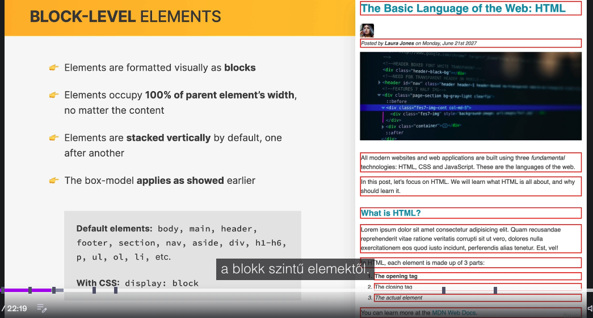
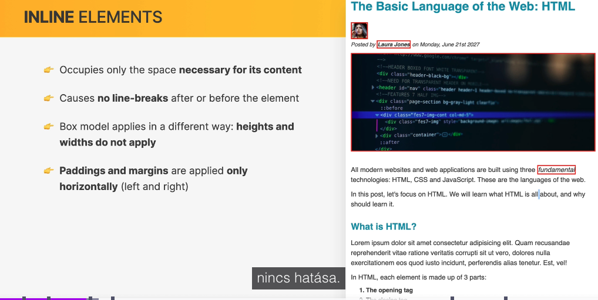
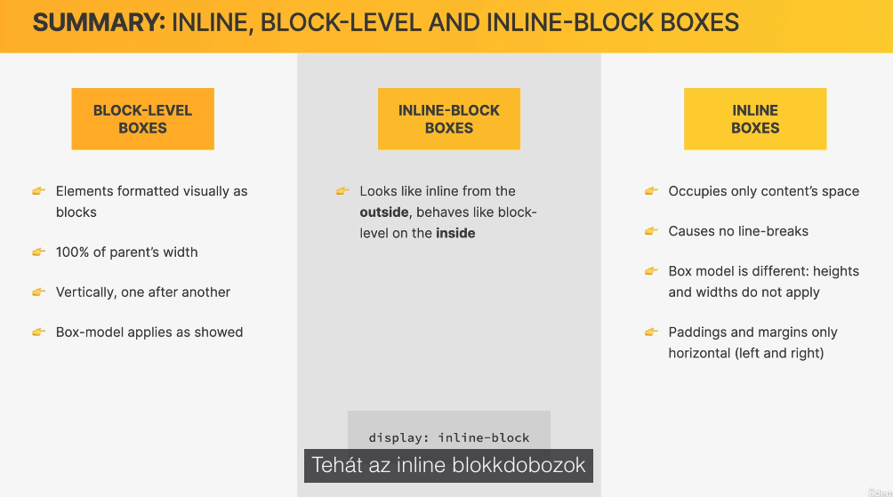

Block, inline és inline-block
Miért tölti ki a címsor a sort, miközben egy link csak a szövege helyét foglalja el? Mikor működik a szélesség, a magasság és a függőleges térköz?
Az óra célja és előkészületek
- A három doboztípus felismerése és összehasonlítása.
- A display tulajdonság használata mindkét irányú átalakításhoz.
- A navigáció formázása és pszeudo-osztályok láncolása.
- Az inline térközök, a fix magasság és a képek különleges viselkedésének megértése.
Folytasd a 10. óra konténeres magazinoldalát, vagy használd a teljes kezdőcsomagot. A kísérletek a saját style.css fájlodba kerüljenek. A tananyagoldal Bootstrap-stílusait ne módosítsd.
Kezdőcsomag letöltése1. Felismerés DevToolsban
Vizsgáld meg a h2 címsort, a bekezdést, a fő fejlécet, a cikket és annak fejlécét: a kiemelt doboz a rendelkezésre álló sor teljes szélességét elfoglalja. A címsor rövid szövege nem indokolná ezt a szélességet, mégis blokk jellegű dobozban jelenik meg.
Vizsgáld meg külön a strong, em és a elemeket: a dobozuk a szövegükhöz igazodik. A szerző 50 × 50 px-es portréja is soron belül helyezkedik el, de a méretezés szempontjából külön eset; erre az óra végén visszatérünk.
outline: 1px solid red; szabállyal is kirajzolhatod a dobozokat; az outline nem növeli a méretet.2. Blokkszintű dobozok: display: block
- Blokkokként jelennek meg, a normál dokumentumfolyamban új sorba kerülnek.
- Automatikus szélességgel kitöltik a rendelkezésre álló vízszintes helyet, rövid tartalom esetén is.
- Alapértelmezésben egymás alatt következnek.
- A width, height, padding, border és margin a korábban tanult módon használható.
Gyakori példák: body, main, header, footer, section, nav, aside, div, h1–h6, p, ul és ol. A li alapértelmezett display értéke list-item: blokk jellegű fő dobozt és listajelölőt hoz létre.
.kiemelt-link { display: block; }width: 100%; content-box mellett paddinggel túl is lóghat. Fix szélességű blokkok továbbra is új sorba kerülnek; flex és grid más elrendezést adhat.3. Soron belüli dobozok: display: inline
Az a, strong, em és span általában soron belül jelenik meg. A szöveg szükséges helyét foglalják el, és nem kényszerítenek sortörést maguk elé vagy mögé. Ha elfogy a hely, a szöveg természetesen új sorba törhet.
- A nem helyettesített inline elemek width és height deklarációi nem határozzák meg a doboz méretét.
- A bal és jobb margin, padding és keret térközt foglal el a sorban.
- A felső és alsó margin nem távolítja el egymástól a szövegsorokat.
- A függőleges padding és keret látható lehet, a háttér is kiterjedhet rájuk, de nem növelik úgy a sormagasságot, mint egy blokk méretei; átfedés jelenhet meg.
strong {
width: 200px;
height: 80px;
/* Ezek nem méretezik a szokásos inline szövegdobozt. */
}4. Navigáció: margin és padding inline linkeken
A CSS nagy oldalrészei és kisebb elemei közé írhatsz magyarázó kommenteket. A kommentek az áttekintést segítik, az elrendezést nem módosítják. Jelöld ki a navigáció nem látogatott linkjeit:
nav a:link {
background-color: orangered;
margin: 20px;
}Bal-jobb térköz keletkezik, de a felső és alsó margó nem hoz létre függőleges helyet. DevToolsban a 20 px-es deklaráció látszhat akkor is, ha nincs ilyen térköz a sor fölött és alatt.
nav a:link {
background-color: orangered;
margin: 20px;
padding: 20px;
}A háttér a padding területén megnő, de a link szövege nem kerül egy új, nagyobb blokk belsejébe. Figyeld meg az átfedést is. Ments és frissíts minden lépés után.
nav a:link, nav a:visited szelektorlistát használjuk. Az állapotok külön színformázásáról a korábbi órákban tanultunk.5. Inline → block és a fix fejlécmagasság
Egészítsd ki az előző kísérletet:
nav a:link {
background-color: orangered;
margin: 20px;
padding: 20px;
display: block;
}A linkek egymás alá kerülnek, automatikus szélességükkel kitöltik a rendelkezésre álló helyet, és a függőleges térközök is hatnak. A szomszédos blokkok pozitív függőleges margói összevonódhatnak: két 20 px-es margó nem feltétlenül 40 px.
height: 80px; értéket. A nagyobb navigáció kilóghat a fejlécből, mert a fix tartalmi magasság nem nő együtt vele. DevToolsban hasonlítsd össze a fejléc és a linkek dobozát. Kommentáld ki a height sort: a fejléc ismét a tartalmához igazodik.A 9. óra végén már kikapcsoltuk ezt a magasságot; itt szándékosan csak kísérletként hozzuk vissza. Végül kapcsold ki a linkeken a narancsvörös háttér, a 20 px margin, a padding és a display: block teljes demóját. A fejléc ismét kisebb lesz. Általában érdemes a magasságot a tartalomhoz igazítani.
6. Block → inline: listaelemek és bekezdések
li { display: inline; }A listaelemek egy soron belül követik egymást, csak a tartalmuk helyét foglalják el. A list-item megjelenítés lecserélése miatt a listajelölők is eltűnhetnek. DevToolsban figyeld meg a dobozokat, majd kapcsold ki a szabályt.
p { display: inline; }A bekezdések között megszűnnek a blokkhatárok, a szöveg folyamatos sorokba kerül. Ez nem egy végtelen, törés nélküli sort jelent: a sorvégen továbbra is törhet. A HTML-ben lévő whitespace miatt a szövegrészek között szóköz maradhat.
Kapcsold ki ezt a kísérletet is. A lista és a bekezdések a kész oldalon őrizzék meg eredeti megjelenítésüket. A display megváltoztatja az elrendezést, de nem cseréli le a HTML-elem jelentését.
7. A két viselkedés együtt: inline-block
Kívül soron belüli, belül blokk jellegű. Egy inline-block doboz együtt mozog a sor többi tartalmával: nem követel külön sort, és automatikus szélességnél a tartalmához, illetve a rendelkezésre álló helyhez igazodik. Ha már nem fér el, a következő sorba kerülhet.
Közben megadható rajta width és height, és minden oldalon használható margin, padding és keret. Belső tartalma blokkos formázási környezetben rendeződik.
.kis-doboz {
display: inline-block;
width: 140px;
height: 60px;
padding: 10px;
margin: 10px;
}Ez a három alapelrendezésen belül hasznos kombináció. A display tulajdonságnak más értékei is vannak, például flex és grid; az inline-block továbbra is hasznos kisebb soron belüli dobozokhoz.
8. Navigáció inline-blockkal
A demók kikapcsolása után először csak vízszintes és függőleges margót próbálj:
nav a:link {
margin-right: 30px;
margin-top: 10px;
}A jobb oldali 30 px működik inline esetén is, a felső 10 px még nem foglal függőleges helyet. Most add hozzá a display sort, és a látogatott linkekre is alkalmazd:
nav a:link,
nav a:visited {
display: inline-block;
margin-right: 30px;
margin-top: 10px;
}A linkek továbbra is egymás mellett maradnak, ha van elég hely, de a felső margójuk már részt vesz a sor méretezésében. DevToolsban ellenőrizd a jobb oldali és felső margót. A HTML-ben a linkek közötti szóköz is adhat további kis távolságot, ezért a látható rés nem feltétlenül pontosan 30 px.
9. Pszeudo-osztályok láncolása: az utolsó link
Az utolsó link után ne maradjon 30 px jobb margó:
nav a:link:last-child,
nav a:visited:last-child {
margin-right: 0;
}A nav a:link:last-child olyan nem látogatott linket jelöl ki a nav belsejében, amely saját szülője utolsó gyermekeleme. A pszeudo-osztályokat szóköz nélkül láncoljuk: mindkét feltétel ugyanarra az elemre vonatkozik.
A példában a linkek a nav közvetlen gyermekei, és az utolsó gyermek egy link. A :last-child nem általában „az utolsó link”: ha mögötte más elem van, nem találja el. A visited változat miatt a szabály látogatás után is érvényes marad.
10. Képek: a szöveges inline szabály kivétele
A videó először inline elemként említi a képet, majd inline-blockként írja le a viselkedését. A pontos megnevezés: az img alapértelmezésben soron belüli helyettesített elem. Tartalmát külső képadat adja, saját méretekkel és képaránnyal.
Ezért width és height is megadható rajta, és a függőleges margin, padding és keret is befolyásolhatja a sorban elfoglalt helyét. Ebből nem következik, hogy a kiszámított display értéke inline-block lenne; DevToolsban inline értéket láthatsz.
.post-img {
width: 100%;
height: auto;
margin: 100px; /* Csak kísérlet! */
}Próbáld ki a 100 px margót, figyeld meg a függőleges térközt, majd töröld. A 100%-os képhez hozzáadott oldalsó margók túlcsordulást is okozhatnak. A szerzőportrén a 50 × 50 px-es méret szintén működik, annak ellenére, hogy soron belül helyezkedik el.
A button sem jó példa a strong-féle, egyszerű szöveges inline dobozra: a böngésző felületi vezérlőként saját megjelenítéssel kezeli. Mindig a tényleges display értéket és működést vizsgáld.
11. Összehasonlító táblázat
| Szempont | Block | Inline (szöveges) | Inline-block |
|---|---|---|---|
| Új sort követel? | Igen, normál blokkfolyamban | Nem | Nem |
| Alapértelmezett szélesség | Kitölti a rendelkezésre álló helyet | Szövegtartalomhoz igazodik | Tartalomhoz és rendelkezésre álló helyhez igazodik |
| width és height | Alkalmazható | Nem méretezi a nem helyettesített inline szövegdobozt | Alkalmazható |
| Bal/jobb térköz | Alkalmazható | Alkalmazható | Alkalmazható |
| Felső/alsó térköz | Részt vesz az elrendezésben | Margin nem ad sortávolságot; padding kirajzolódhat | Részt vesz az elrendezésben |
| Gyakori példák | div, p, h2, header | a, strong, em, span | display: inline-block beállítású link vagy doboz |
A legtöbb esetben az alapértelmezett megjelenítés megfelelő. Blockra váltunk, ha egy kis elemnek külön sort szeretnénk adni; inline-ra, ha egyszerű szövegrész legyen; inline-blockra, ha soron belül kell maradnia, de méretezni és minden oldalon térközzel ellátni is szeretnénk.
12. Élő szemléltetés
Mindhárom példában ugyanaz a width, height, padding és margin szerepel; csak a display tér el. Hasonlítsd össze a dobozokat, és szűkítsd az ablakot.
Szemléltetés külön oldalon13. A videó három ábrája
Az eredeti ábrák az elemhatárokat és a három típus összevetését mutatják. Az inline padding és a képek értelmezéséhez használd a fenti pontosításokat is.



14. Önálló gyakorlati feladat és mintamegoldás
- DevToolsban azonosíts egy blokkot, egy szöveges inline elemet és a szerző képét.
- A navigáció nem látogatott linkjein teszteld a narancsvörös hátteret, a 20 px margót, majd a 20 px paddinget.
- Alakítsd a linkeket blockká. A fejlécen teszteld a height: 80px túlcsordulását, majd kapcsold ki a magasságot és a teljes linkdemót.
- Próbáld ki külön a li és p display: inline értékét, majd állítsd vissza őket.
- A kész navigáció linkjein legyen inline-block, 30 px jobb és 10 px felső margó, látogatott állapotban is.
- Az utolsó link jobb margóját pszeudo-osztályok láncolásával nullázd.
- Próbáld ki a fő kép 100 px margóját, majd távolítsd el. Maradjon width: 100% és height: auto.
- Ments, frissíts, vizsgáld meg a kész navigáció margóit és szűk ablakban a sortörést.
Mini kihívás
Adj egy linknek 140 px tartalmi szélességet, 10 px paddinget és 2 px keretet úgy, hogy soron belül maradjon. Mekkora a kerettel mért szélesség content-box esetén?
Megoldás és végleges órai CSS-kiegészítés
/* Navigáció: soron belül marad, a függőleges margó is működik */
nav a:link,
nav a:visited {
display: inline-block;
margin-right: 30px;
margin-top: 10px;
}
nav a:link:last-child,
nav a:visited:last-child {
margin-right: 0;
}
Mini kihívás: display: inline-block; width: 140px; padding: 10px; border: 2px solid. Teljes szélesség: 140 + 20 + 4 = 164 px. A kísérletek narancsvörös háttere, globális inline szabályai, 80 px fejléce és 100 px képmargója nem maradnak a kész megoldásban.
Mintamegoldás megnyitásaMegoldás letöltése15. Ellenőrző kérdések
- Miért foglalja el a h2 a teljes sort?
- Miért nem méretezi a width a strong elemet?
- Eltűnik-e az inline függőleges padding?
- Miért lóghat ki a block navigáció a fejlécből?
- Miért jó itt az inline-block?
- Mit jelent a :link:last-child?
- Miért működik a képen width és height?
- A display módosítja a HTML jelentését?
Válaszok
- Normál elrendezésben blokk jellegű, automatikus szélességgel.
- Szöveges, nem helyettesített inline doboz.
- Nem: látható lehet, de nem ad megfelelő helyet a sorok között.
- A rögzített magasság nem követi a megnőtt tartalmat.
- A linkek soron belül maradnak, miközben a függőleges margójuk is helyet foglal.
- Ugyanazon elemnek nem látogatott linknek és saját szülője utolsó gyermekének is kell lennie.
- A kép helyettesített elem; nem a szöveges inline méretezési szabályt követi.
- Nem, a megjelenítést és elrendezést szabályozza.
Szakmai háttér a pontosításokhoz: MDN: dobozmodell, MDN: display.